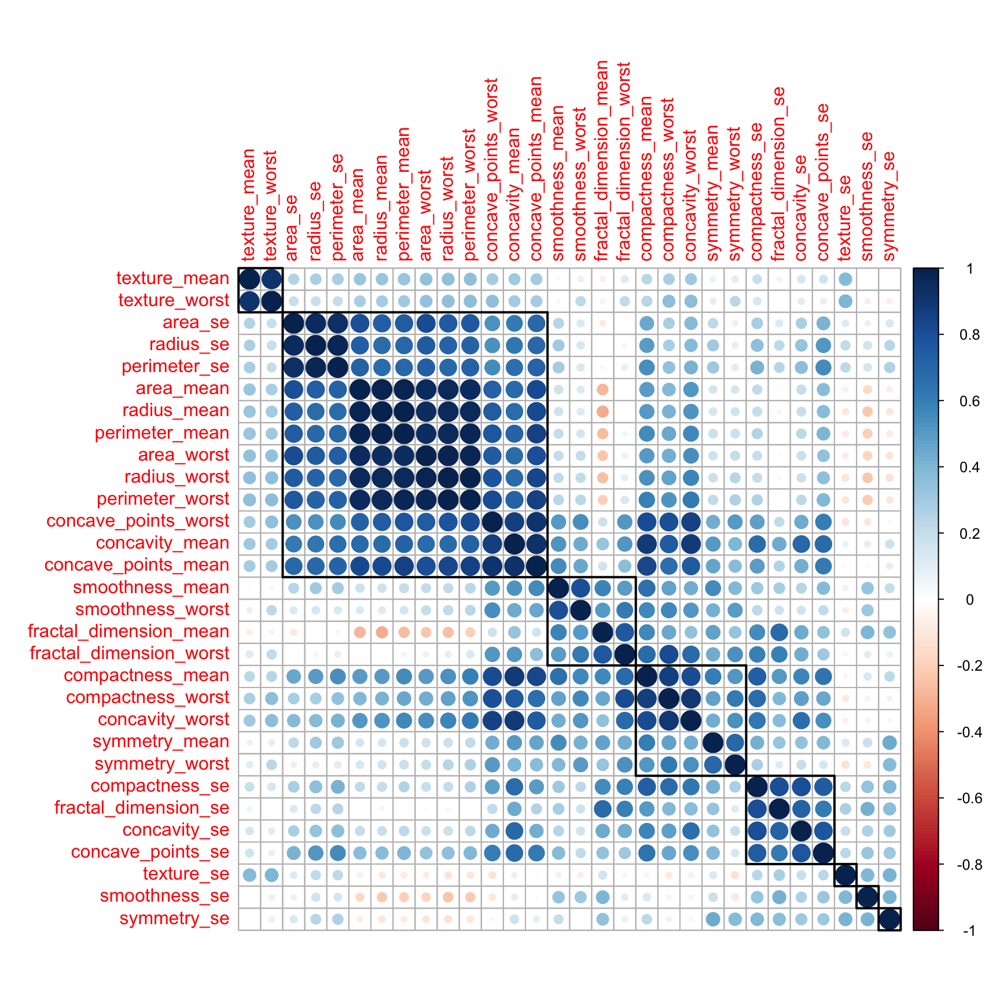
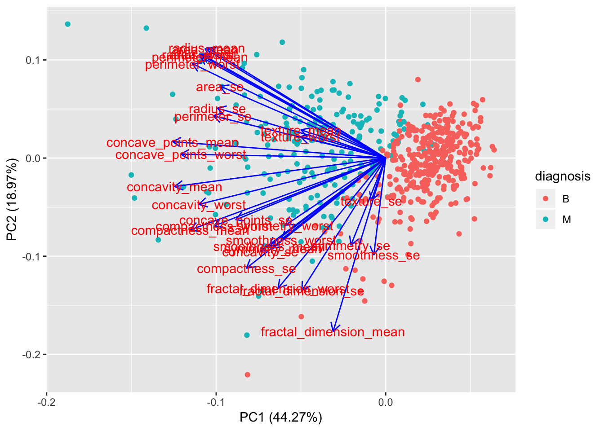
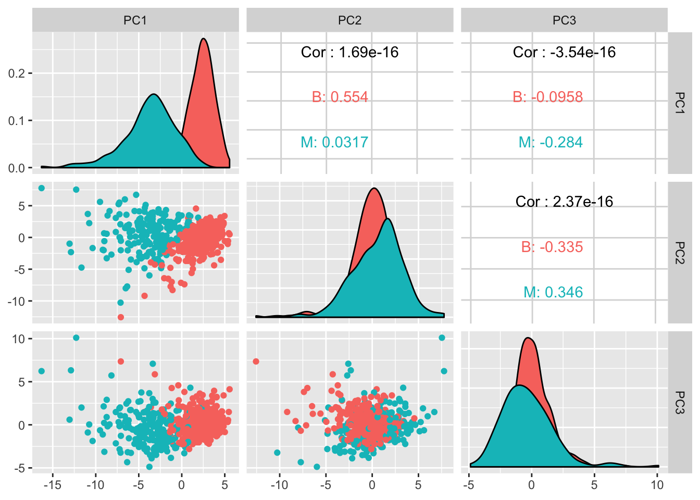
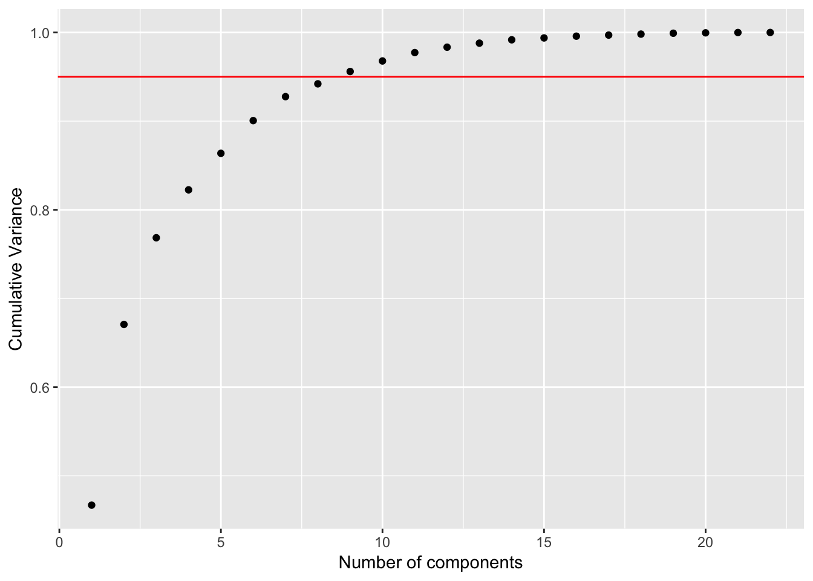
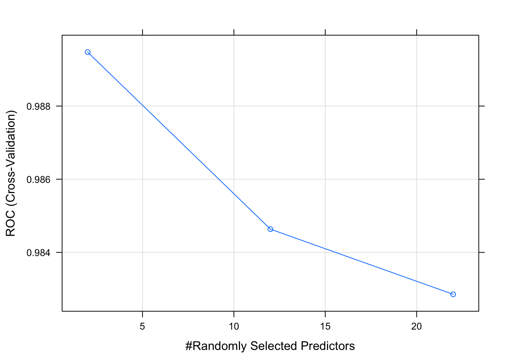
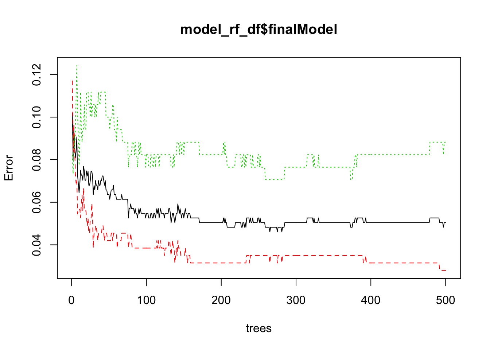
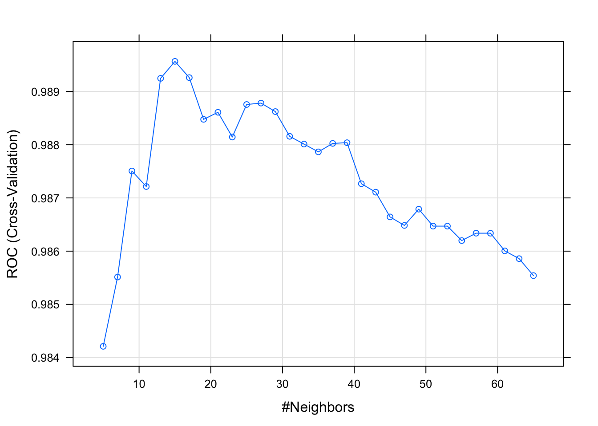
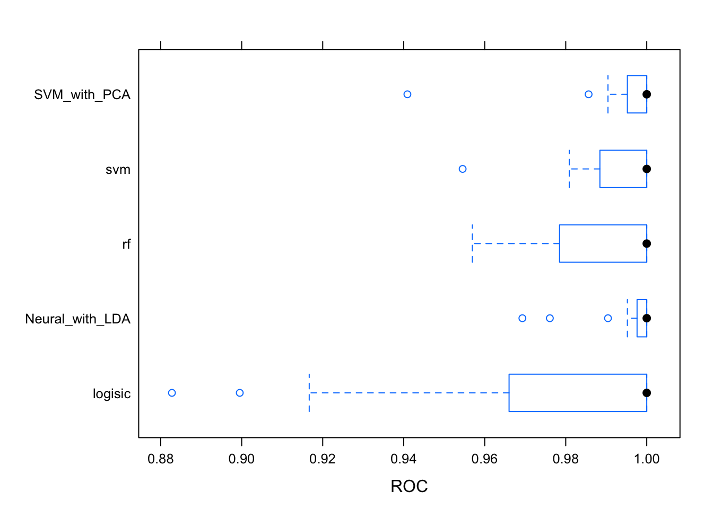

Chapter 12 Case Study - Wisconsin Breast Cancer
This is another classification example. We have to classify breast tumors as malign or benign.
The dataset is available on the UCI Machine learning website as well as on [Kaggle](https://www.kaggle.com/uciml/breast-cancer-wisconsin-data.
We have taken ideas from several blogs listed below in the reference section.
12.1 Import the data
library(tidyverse)
df <- read_csv("dataset/BreastCancer.csv")
# This is defintely an most important step:
# Check for appropriate class on each of the variable.
glimpse(df)## Observations: 569
## Variables: 32
## $ id <int> 842302, 842517, 84300903, 84348301, 84...
## $ diagnosis <chr> "M", "M", "M", "M", "M", "M", "M", "M"...
## $ radius_mean <dbl> 17.990, 20.570, 19.690, 11.420, 20.290...
## $ texture_mean <dbl> 10.38, 17.77, 21.25, 20.38, 14.34, 15....
## $ perimeter_mean <dbl> 122.80, 132.90, 130.00, 77.58, 135.10,...
## $ area_mean <dbl> 1001.0, 1326.0, 1203.0, 386.1, 1297.0,...
## $ smoothness_mean <dbl> 0.11840, 0.08474, 0.10960, 0.14250, 0....
## $ compactness_mean <dbl> 0.27760, 0.07864, 0.15990, 0.28390, 0....
## $ concavity_mean <dbl> 0.30010, 0.08690, 0.19740, 0.24140, 0....
## $ concave_points_mean <dbl> 0.14710, 0.07017, 0.12790, 0.10520, 0....
## $ symmetry_mean <dbl> 0.2419, 0.1812, 0.2069, 0.2597, 0.1809...
## $ fractal_dimension_mean <dbl> 0.07871, 0.05667, 0.05999, 0.09744, 0....
## $ radius_se <dbl> 1.0950, 0.5435, 0.7456, 0.4956, 0.7572...
## $ texture_se <dbl> 0.9053, 0.7339, 0.7869, 1.1560, 0.7813...
## $ perimeter_se <dbl> 8.589, 3.398, 4.585, 3.445, 5.438, 2.2...
## $ area_se <dbl> 153.40, 74.08, 94.03, 27.23, 94.44, 27...
## $ smoothness_se <dbl> 0.006399, 0.005225, 0.006150, 0.009110...
## $ compactness_se <dbl> 0.049040, 0.013080, 0.040060, 0.074580...
## $ concavity_se <dbl> 0.05373, 0.01860, 0.03832, 0.05661, 0....
## $ concave_points_se <dbl> 0.015870, 0.013400, 0.020580, 0.018670...
## $ symmetry_se <dbl> 0.03003, 0.01389, 0.02250, 0.05963, 0....
## $ fractal_dimension_se <dbl> 0.006193, 0.003532, 0.004571, 0.009208...
## $ radius_worst <dbl> 25.38, 24.99, 23.57, 14.91, 22.54, 15....
## $ texture_worst <dbl> 17.33, 23.41, 25.53, 26.50, 16.67, 23....
## $ perimeter_worst <dbl> 184.60, 158.80, 152.50, 98.87, 152.20,...
## $ area_worst <dbl> 2019.0, 1956.0, 1709.0, 567.7, 1575.0,...
## $ smoothness_worst <dbl> 0.1622, 0.1238, 0.1444, 0.2098, 0.1374...
## $ compactness_worst <dbl> 0.6656, 0.1866, 0.4245, 0.8663, 0.2050...
## $ concavity_worst <dbl> 0.71190, 0.24160, 0.45040, 0.68690, 0....
## $ concave_points_worst <dbl> 0.26540, 0.18600, 0.24300, 0.25750, 0....
## $ symmetry_worst <dbl> 0.4601, 0.2750, 0.3613, 0.6638, 0.2364...
## $ fractal_dimension_worst <dbl> 0.11890, 0.08902, 0.08758, 0.17300, 0....So we have 569 observations with 32 variables. Ideally for so many variables, it would be appropriate to get a few more observations.
12.2 Tidy the data
Basics change of variable type for the outcome variable and renaming of variables badly encoded
df$diagnosis <- as.factor(df$diagnosis)
#df <- df %>% rename(concave_points_mean = `concave points_mean`,
# concave_points_se = `concave points_se`,
# concave_points_worst = `concave points_worst`)As you might have noticed, in this case and the precedent we had very little to do here. This is not usually the case.
12.3 Understand the data
This is the circular phase of our dealing with data. This is where each of the transforming, visualizing and modeling stage reinforce each other to create a better understanding.
Check for missing values
map_int(df, function(.x) sum(is.na(.x)))## id diagnosis radius_mean
## 0 0 0
## texture_mean perimeter_mean area_mean
## 0 0 0
## smoothness_mean compactness_mean concavity_mean
## 0 0 0
## concave_points_mean symmetry_mean fractal_dimension_mean
## 0 0 0
## radius_se texture_se perimeter_se
## 0 0 0
## area_se smoothness_se compactness_se
## 0 0 0
## concavity_se concave_points_se symmetry_se
## 0 0 0
## fractal_dimension_se radius_worst texture_worst
## 0 0 0
## perimeter_worst area_worst smoothness_worst
## 0 0 0
## compactness_worst concavity_worst concave_points_worst
## 0 0 0
## symmetry_worst fractal_dimension_worst
## 0 0Good news, there are no missing values.
In the case that there would be many missing values, we would go on the transforming data for some appropriate imputation.
Let’s check how balanced is our response variable
round(prop.table(table(df$diagnosis)), 2)##
## B M
## 0.63 0.37The response variable is slightly unbalanced.
Let’s look for correlation in the variables. Most ML algorithms assumed that the predictor variables are independent from each others.
Let’s check for correlations. For an anlysis to be robust it is good to remove mutlicollinearity (aka remove highly correlated predictors)
df_corr <- cor(df %>% select(-id, -diagnosis))
corrplot::corrplot(df_corr, order = "hclust", tl.cex = 1, addrect = 8)
Indeed there are quite a few variables that are correlated. On the next step, we will remove the highly correlated ones using the caret package.
12.3.1 Transform the data
library(caret)
# The findcorrelation() function from caret package remove highly correlated predictors
# based on whose correlation is above 0.9. This function uses a heuristic algorithm
# to determine which variable should be removed instead of selecting blindly
df2 <- df %>% select(-findCorrelation(df_corr, cutoff = 0.9))
#Number of columns for our new data frame
ncol(df2)## [1] 22So our new data frame df2 is 10 variables shorter.
12.3.2 Pre-process the data
12.3.2.1 Using PCA
Let’s first go on an unsupervised analysis with a PCA analysis.
To do so, we will remove the id and diagnosis variable, then we will also scale and ceter the variables.
preproc_pca_df <- prcomp(df %>% select(-id, -diagnosis), scale = TRUE, center = TRUE)
summary(preproc_pca_df)## Importance of components:
## PC1 PC2 PC3 PC4 PC5 PC6
## Standard deviation 3.6444 2.3857 1.67867 1.40735 1.28403 1.09880
## Proportion of Variance 0.4427 0.1897 0.09393 0.06602 0.05496 0.04025
## Cumulative Proportion 0.4427 0.6324 0.72636 0.79239 0.84734 0.88759
## PC7 PC8 PC9 PC10 PC11 PC12
## Standard deviation 0.82172 0.69037 0.6457 0.59219 0.5421 0.51104
## Proportion of Variance 0.02251 0.01589 0.0139 0.01169 0.0098 0.00871
## Cumulative Proportion 0.91010 0.92598 0.9399 0.95157 0.9614 0.97007
## PC13 PC14 PC15 PC16 PC17 PC18
## Standard deviation 0.49128 0.39624 0.30681 0.28260 0.24372 0.22939
## Proportion of Variance 0.00805 0.00523 0.00314 0.00266 0.00198 0.00175
## Cumulative Proportion 0.97812 0.98335 0.98649 0.98915 0.99113 0.99288
## PC19 PC20 PC21 PC22 PC23 PC24
## Standard deviation 0.22244 0.17652 0.1731 0.16565 0.15602 0.1344
## Proportion of Variance 0.00165 0.00104 0.0010 0.00091 0.00081 0.0006
## Cumulative Proportion 0.99453 0.99557 0.9966 0.99749 0.99830 0.9989
## PC25 PC26 PC27 PC28 PC29 PC30
## Standard deviation 0.12442 0.09043 0.08307 0.03987 0.02736 0.01153
## Proportion of Variance 0.00052 0.00027 0.00023 0.00005 0.00002 0.00000
## Cumulative Proportion 0.99942 0.99969 0.99992 0.99997 1.00000 1.00000# Calculate the proportion of variance explained
pca_df_var <- preproc_pca_df$sdev^2
pve_df <- pca_df_var / sum(pca_df_var)
cum_pve <- cumsum(pve_df)
pve_table <- tibble(comp = seq(1:ncol(df %>% select(-id, -diagnosis))), pve_df, cum_pve)
ggplot(pve_table, aes(x = comp, y = cum_pve)) +
geom_point() +
geom_abline(intercept = 0.95, color = "red", slope = 0) +
labs(x = "Number of components", y = "Cumulative Variance")With the original dataset, 95% of the variance is explained with 10 PC’s.
Let’s check on the most influential variables for the first 2 components
pca_df <- as_tibble(preproc_pca_df$x)
ggplot(pca_df, aes(x = PC1, y = PC2, col = df$diagnosis)) + geom_point()It does look like the first 2 components managed to separate the diagnosis quite well. Lots of potential here.
If we want to get a more detailled analysis of what variables are the most influential in the first 2 components, we can use the ggfortify library.
library(ggfortify)
autoplot(preproc_pca_df, data = df, colour = 'diagnosis',
loadings = FALSE, loadings.label = TRUE, loadings.colour = "blue")
Let’s visuzalize the first 3 components.
df_pcs <- cbind(as_tibble(df$diagnosis), as_tibble(preproc_pca_df$x))
GGally::ggpairs(df_pcs, columns = 2:4, ggplot2::aes(color = value))
Let’s do the same exercise with our second df, the one where we removed the highly correlated predictors.
preproc_pca_df2 <- prcomp(df2, scale = TRUE, center = TRUE)
summary(preproc_pca_df2)## Importance of components:
## PC1 PC2 PC3 PC4 PC5 PC6
## Standard deviation 3.2051 2.1175 1.46634 1.09037 0.95215 0.90087
## Proportion of Variance 0.4669 0.2038 0.09773 0.05404 0.04121 0.03689
## Cumulative Proportion 0.4669 0.6707 0.76847 0.82251 0.86372 0.90061
## PC7 PC8 PC9 PC10 PC11 PC12
## Standard deviation 0.77121 0.56374 0.5530 0.51130 0.45605 0.36602
## Proportion of Variance 0.02703 0.01445 0.0139 0.01188 0.00945 0.00609
## Cumulative Proportion 0.92764 0.94209 0.9560 0.96787 0.97732 0.98341
## PC13 PC14 PC15 PC16 PC17 PC18 PC19
## Standard deviation 0.31602 0.28856 0.2152 0.2098 0.16346 0.1558 0.1486
## Proportion of Variance 0.00454 0.00378 0.0021 0.0020 0.00121 0.0011 0.0010
## Cumulative Proportion 0.98795 0.99174 0.9938 0.9958 0.99706 0.9982 0.9992
## PC20 PC21 PC22
## Standard deviation 0.09768 0.08667 0.03692
## Proportion of Variance 0.00043 0.00034 0.00006
## Cumulative Proportion 0.99960 0.99994 1.00000pca_df2_var <- preproc_pca_df2$sdev^2
# proportion of variance explained
pve_df2 <- pca_df2_var / sum(pca_df2_var)
cum_pve_df2 <- cumsum(pve_df2)
pve_table_df2 <- tibble(comp = seq(1:ncol(df2)), pve_df2, cum_pve_df2)
ggplot(pve_table_df2, aes(x = comp, y = cum_pve_df2)) +
geom_point() +
geom_abline(intercept = 0.95, color = "red", slope = 0) +
labs(x = "Number of components", y = "Cumulative Variance")
In this case, around 8 PC’s explained 95% of the variance.
12.3.2.2 Using LDA
The advantage of using LDA is that it takes into consideration the different class.
preproc_lda_df <- MASS::lda(diagnosis ~., data = df, center = TRUE, scale = TRUE)
preproc_lda_df## Call:
## lda(diagnosis ~ ., data = df, center = TRUE, scale = TRUE)
##
## Prior probabilities of groups:
## B M
## 0.6274165 0.3725835
##
## Group means:
## id radius_mean texture_mean perimeter_mean area_mean
## B 26543825 12.14652 17.91476 78.07541 462.7902
## M 36818050 17.46283 21.60491 115.36538 978.3764
## smoothness_mean compactness_mean concavity_mean concave_points_mean
## B 0.09247765 0.08008462 0.04605762 0.02571741
## M 0.10289849 0.14518778 0.16077472 0.08799000
## symmetry_mean fractal_dimension_mean radius_se texture_se perimeter_se
## B 0.174186 0.06286739 0.2840824 1.220380 2.000321
## M 0.192909 0.06268009 0.6090825 1.210915 4.323929
## area_se smoothness_se compactness_se concavity_se concave_points_se
## B 21.13515 0.007195902 0.02143825 0.02599674 0.009857653
## M 72.67241 0.006780094 0.03228117 0.04182401 0.015060472
## symmetry_se fractal_dimension_se radius_worst texture_worst
## B 0.02058381 0.003636051 13.37980 23.51507
## M 0.02047240 0.004062406 21.13481 29.31821
## perimeter_worst area_worst smoothness_worst compactness_worst
## B 87.00594 558.8994 0.1249595 0.1826725
## M 141.37033 1422.2863 0.1448452 0.3748241
## concavity_worst concave_points_worst symmetry_worst
## B 0.1662377 0.07444434 0.2702459
## M 0.4506056 0.18223731 0.3234679
## fractal_dimension_worst
## B 0.07944207
## M 0.09152995
##
## Coefficients of linear discriminants:
## LD1
## id -2.512117e-10
## radius_mean -1.080876e+00
## texture_mean 2.338408e-02
## perimeter_mean 1.172707e-01
## area_mean 1.595690e-03
## smoothness_mean 5.251575e-01
## compactness_mean -2.094197e+01
## concavity_mean 6.955923e+00
## concave_points_mean 1.047567e+01
## symmetry_mean 4.938898e-01
## fractal_dimension_mean -5.937663e-02
## radius_se 2.101503e+00
## texture_se -3.979869e-02
## perimeter_se -1.121814e-01
## area_se -4.083504e-03
## smoothness_se 7.987663e+01
## compactness_se 1.387026e-01
## concavity_se -1.768261e+01
## concave_points_se 5.350520e+01
## symmetry_se 8.143611e+00
## fractal_dimension_se -3.431356e+01
## radius_worst 9.677207e-01
## texture_worst 3.540591e-02
## perimeter_worst -1.204507e-02
## area_worst -5.012127e-03
## smoothness_worst 2.612258e+00
## compactness_worst 3.636892e-01
## concavity_worst 1.880699e+00
## concave_points_worst 2.218189e+00
## symmetry_worst 2.783102e+00
## fractal_dimension_worst 2.117830e+01# Making a df out of the LDA for visualization purpose.
predict_lda_df <- predict(preproc_lda_df, df)$x %>%
as_data_frame() %>%
cbind(diagnosis = df$diagnosis)
glimpse(predict_lda_df)## Observations: 569
## Variables: 2
## $ LD1 <dbl> 3.3257395, 2.3298023, 3.7416859, 4.0209903, 2.275428...
## $ diagnosis <fctr> M, M, M, M, M, M, M, M, M, M, M, M, M, M, M, M, M, ...12.3.3 Model the data
Let’s first create a testing and training set using caret
set.seed(1815)
df3 <- cbind(diagnosis = df$diagnosis, df2)
df_sampling_index <- createDataPartition(df3$diagnosis, times = 1, p = 0.8, list = FALSE)
df_training <- df3[df_sampling_index, ]
df_testing <- df3[-df_sampling_index, ]
df_control <- trainControl(method="cv",
number = 15,
classProbs = TRUE,
summaryFunction = twoClassSummary)12.3.3.1 Logistic regression
Our first model is doing logistic regression on df2, the data frame where we took away the highly correlated variables.
model_logreg_df <- train(diagnosis ~., data = df_training, method = "glm",
metric = "ROC", preProcess = c("scale", "center"),
trControl = df_control)
prediction_logreg_df <- predict(model_logreg_df, df_testing)
cm_logreg_df <- confusionMatrix(prediction_logreg_df, df_testing$diagnosis, positive = "M")
cm_logreg_df## Confusion Matrix and Statistics
##
## Reference
## Prediction B M
## B 71 2
## M 0 40
##
## Accuracy : 0.9823
## 95% CI : (0.9375, 0.9978)
## No Information Rate : 0.6283
## P-Value [Acc > NIR] : <2e-16
##
## Kappa : 0.9617
## Mcnemar's Test P-Value : 0.4795
##
## Sensitivity : 0.9524
## Specificity : 1.0000
## Pos Pred Value : 1.0000
## Neg Pred Value : 0.9726
## Prevalence : 0.3717
## Detection Rate : 0.3540
## Detection Prevalence : 0.3540
## Balanced Accuracy : 0.9762
##
## 'Positive' Class : M
## 12.3.3.2 Random Forest
Our second model uses random forest. Similarly, we using the df2 data frame, the one where we took away the highly correlated variables.
model_rf_df <- train(diagnosis ~., data = df_training,
method = "rf",
metric = 'ROC',
trControl = df_control)
prediction_rf_df <- predict(model_rf_df, df_testing)
cm_rf_df <- confusionMatrix(prediction_rf_df, df_testing$diagnosis, positive = "M")
cm_rf_df## Confusion Matrix and Statistics
##
## Reference
## Prediction B M
## B 71 3
## M 0 39
##
## Accuracy : 0.9735
## 95% CI : (0.9244, 0.9945)
## No Information Rate : 0.6283
## P-Value [Acc > NIR] : <2e-16
##
## Kappa : 0.9423
## Mcnemar's Test P-Value : 0.2482
##
## Sensitivity : 0.9286
## Specificity : 1.0000
## Pos Pred Value : 1.0000
## Neg Pred Value : 0.9595
## Prevalence : 0.3717
## Detection Rate : 0.3451
## Detection Prevalence : 0.3451
## Balanced Accuracy : 0.9643
##
## 'Positive' Class : M
## Let’s make some diagnostic plots.
plot(model_rf_df)
plot(model_rf_df$finalModel)
varImpPlot(model_rf_df$finalModel, sort = TRUE,
n.var = 10, main = "The 10 variables with the most predictive power")12.3.3.3 KNN
model_knn_df <- train(diagnosis ~., data = df_training,
method = "knn",
metric = "ROC",
preProcess = c("scale", "center"),
trControl = df_control,
tuneLength =31)
plot(model_knn_df)
prediction_knn_df <- predict(model_knn_df, df_testing)
cm_knn_df <- confusionMatrix(prediction_knn_df, df_testing$diagnosis, positive = "M")
cm_knn_df## Confusion Matrix and Statistics
##
## Reference
## Prediction B M
## B 70 6
## M 1 36
##
## Accuracy : 0.9381
## 95% CI : (0.8765, 0.9747)
## No Information Rate : 0.6283
## P-Value [Acc > NIR] : 1.718e-14
##
## Kappa : 0.8641
## Mcnemar's Test P-Value : 0.1306
##
## Sensitivity : 0.8571
## Specificity : 0.9859
## Pos Pred Value : 0.9730
## Neg Pred Value : 0.9211
## Prevalence : 0.3717
## Detection Rate : 0.3186
## Detection Prevalence : 0.3274
## Balanced Accuracy : 0.9215
##
## 'Positive' Class : M
## 12.3.3.4 Support Vector Machine
set.seed(1815)
model_svm_df <- train(diagnosis ~., data = df_training, method = "svmLinear",
metric = "ROC",
preProcess = c("scale", "center"),
trace = FALSE,
trControl = df_control)
prediction_svm_df <- predict(model_svm_df, df_testing)
cm_svm_df <- confusionMatrix(prediction_svm_df, df_testing$diagnosis, positive = "M")
cm_svm_df## Confusion Matrix and Statistics
##
## Reference
## Prediction B M
## B 71 2
## M 0 40
##
## Accuracy : 0.9823
## 95% CI : (0.9375, 0.9978)
## No Information Rate : 0.6283
## P-Value [Acc > NIR] : <2e-16
##
## Kappa : 0.9617
## Mcnemar's Test P-Value : 0.4795
##
## Sensitivity : 0.9524
## Specificity : 1.0000
## Pos Pred Value : 1.0000
## Neg Pred Value : 0.9726
## Prevalence : 0.3717
## Detection Rate : 0.3540
## Detection Prevalence : 0.3540
## Balanced Accuracy : 0.9762
##
## 'Positive' Class : M
## This is is an OK model.
I am wondering though if we could achieve better results with SVM when doing it on the PCA data set.
set.seed(1815)
df_control_pca <- trainControl(method="cv",
number = 15,
preProcOptions = list(thresh = 0.9), # threshold for pca preprocess
classProbs = TRUE,
summaryFunction = twoClassSummary)
model_svm_pca_df <- train(diagnosis~.,
df_training, method = "svmLinear", metric = "ROC",
preProcess = c('center', 'scale', "pca"),
trControl = df_control_pca)
prediction_svm_pca_df <- predict(model_svm_pca_df, df_testing)
cm_svm_pca_df <- confusionMatrix(prediction_svm_pca_df, df_testing$diagnosis, positive = "M")
cm_svm_pca_df## Confusion Matrix and Statistics
##
## Reference
## Prediction B M
## B 70 2
## M 1 40
##
## Accuracy : 0.9735
## 95% CI : (0.9244, 0.9945)
## No Information Rate : 0.6283
## P-Value [Acc > NIR] : <2e-16
##
## Kappa : 0.9429
## Mcnemar's Test P-Value : 1
##
## Sensitivity : 0.9524
## Specificity : 0.9859
## Pos Pred Value : 0.9756
## Neg Pred Value : 0.9722
## Prevalence : 0.3717
## Detection Rate : 0.3540
## Detection Prevalence : 0.3628
## Balanced Accuracy : 0.9691
##
## 'Positive' Class : M
## That’s already better. The treshold parameter is what we needed to play with.
12.3.3.5 Neural Network with LDA
To use the LDA pre-processing step, we need to also create the same training and testing set.
lda_training <- predict_lda_df[df_sampling_index, ]
lda_testing <- predict_lda_df[-df_sampling_index, ]
model_nnetlda_df <- train(diagnosis ~., lda_training,
method = "nnet",
metric = "ROC",
preProcess = c("center", "scale"),
tuneLength = 10,
trace = FALSE,
trControl = df_control)
prediction_nnetlda_df <- predict(model_nnetlda_df, lda_testing)
cm_nnetlda_df <- confusionMatrix(prediction_nnetlda_df, lda_testing$diagnosis, positive = "M")
cm_nnetlda_df## Confusion Matrix and Statistics
##
## Reference
## Prediction B M
## B 71 1
## M 0 41
##
## Accuracy : 0.9912
## 95% CI : (0.9517, 0.9998)
## No Information Rate : 0.6283
## P-Value [Acc > NIR] : <2e-16
##
## Kappa : 0.981
## Mcnemar's Test P-Value : 1
##
## Sensitivity : 0.9762
## Specificity : 1.0000
## Pos Pred Value : 1.0000
## Neg Pred Value : 0.9861
## Prevalence : 0.3717
## Detection Rate : 0.3628
## Detection Prevalence : 0.3628
## Balanced Accuracy : 0.9881
##
## 'Positive' Class : M
## 12.3.3.6 Models evaluation
model_list <- list(logisic = model_logreg_df, rf = model_rf_df,
svm = model_svm_df, SVM_with_PCA = model_svm_pca_df,
Neural_with_LDA = model_nnetlda_df)
results <- resamples(model_list)
summary(results)##
## Call:
## summary.resamples(object = results)
##
## Models: logisic, rf, svm, SVM_with_PCA, Neural_with_LDA
## Number of resamples: 15
##
## ROC
## Min. 1st Qu. Median Mean 3rd Qu. Max. NA's
## logisic 0.8827751 0.9660088 1 0.9744418 1 1 0
## rf 0.9497608 0.9808612 1 0.9889952 1 1 0
## svm 0.9545455 0.9884370 1 0.9928761 1 1 0
## SVM_with_PCA 0.9409091 0.9952153 1 0.9932430 1 1 0
## Neural_with_LDA 0.9692982 0.9976077 1 0.9954014 1 1 0
##
## Sens
## Min. 1st Qu. Median Mean 3rd Qu. Max. NA's
## logisic 0.8947368 0.9473684 0.9473684 0.9615789 1 1 0
## rf 0.8947368 0.9473684 1.0000000 0.9721053 1 1 0
## svm 0.9473684 1.0000000 1.0000000 0.9929825 1 1 0
## SVM_with_PCA 0.9473684 1.0000000 1.0000000 0.9894737 1 1 0
## Neural_with_LDA 0.8947368 1.0000000 1.0000000 0.9859649 1 1 0
##
## Spec
## Min. 1st Qu. Median Mean 3rd Qu. Max. NA's
## logisic 0.8181818 0.9128788 1.0000000 0.9530303 1 1 0
## rf 0.6363636 0.9090909 0.9090909 0.9095960 1 1 0
## svm 0.8181818 0.9090909 0.9166667 0.9343434 1 1 0
## SVM_with_PCA 0.8181818 0.9090909 1.0000000 0.9580808 1 1 0
## Neural_with_LDA 0.8181818 0.9128788 1.0000000 0.9525253 1 1 0bwplot(results, metric = "ROC")
#dotplot(results)The logistic has to much variability for it to be reliable. The Random Forest and Neural Network with LDA pre-processing are giving the best results. The ROC metric measure the auc of the roc curve of each model. This metric is independent of any threshold. Let’s remember how these models result with the testing dataset. Prediction classes are obtained by default with a threshold of 0.5 which could not be the best with an unbalanced dataset like this.
cm_list <- list(cm_rf = cm_rf_df, cm_svm = cm_svm_df,
cm_logisic = cm_logreg_df, cm_nnet_LDA = cm_nnetlda_df)
results <- map_df(cm_list, function(x) x$byClass) %>% as_tibble() %>%
mutate(stat = names(cm_rf_df$byClass))
results## # A tibble: 11 x 5
## cm_rf cm_svm cm_logisic cm_nnet_LDA stat
## <dbl> <dbl> <dbl> <dbl> <chr>
## 1 0.9285714 0.9523810 0.9523810 0.9761905 Sensitivity
## 2 1.0000000 1.0000000 1.0000000 1.0000000 Specificity
## 3 1.0000000 1.0000000 1.0000000 1.0000000 Pos Pred Value
## 4 0.9594595 0.9726027 0.9726027 0.9861111 Neg Pred Value
## 5 1.0000000 1.0000000 1.0000000 1.0000000 Precision
## 6 0.9285714 0.9523810 0.9523810 0.9761905 Recall
## 7 0.9629630 0.9756098 0.9756098 0.9879518 F1
## 8 0.3716814 0.3716814 0.3716814 0.3716814 Prevalence
## 9 0.3451327 0.3539823 0.3539823 0.3628319 Detection Rate
## 10 0.3451327 0.3539823 0.3539823 0.3628319 Detection Prevalence
## 11 0.9642857 0.9761905 0.9761905 0.9880952 Balanced AccuracyThe best results for sensitivity (detection of breast cases) is LDA_NNET which also has a great F1 score.
12.4 References
A useful popular kernel on this dataset on Kaggle Another one, also on Kaggle And another one, especially nice to compare models.